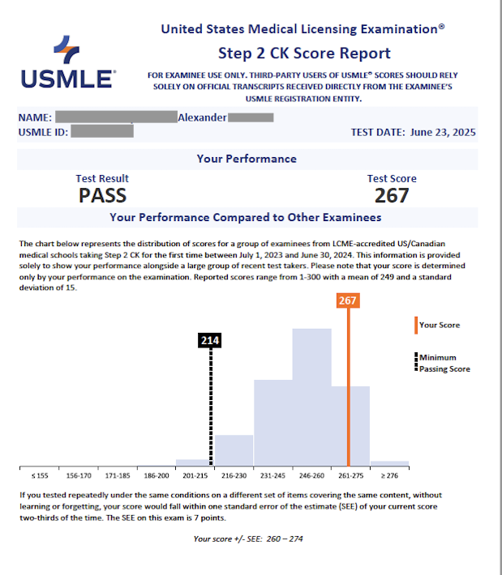

--:--:--
Book a free call
USMLE300 works on all of that — how you read and approach questions, how you study, and how you plan the run-up to your test. There's a free strategy tool and a few games below, plus one-on-one tutoring when you want it.
This walks you through five different ways of reading a question and shows you which one actually works best for you. Most people come out of it realizing they've been defaulting to an approach that was quietly costing them.
A few free browser games I put together to make question practice less of a slog. No account, nothing to install — some reset daily, some you can play as much as you want.
Five vignettes, 45 seconds each, three lives. Get one wrong and you lose a life; string them together for combo bonuses.
One patient a day. Clues come one at a time — the fewer you need to land the diagnosis, the higher you score. Then share your grid.
Sixteen terms, four hidden groups of four. Some terms could sit in more than one group, so pick carefully or lose a life.
See a buzzword, name the diagnosis. "Keratin pearls" → ? "Reed-Sternberg cells" → ? Sixty seconds, no vignettes, just recall.
Head-to-head against an AI opponent on the same five questions. Fastest correct answer takes the round, best of five, and you earn an Elo rating.
Sessions are built around your gaps — the questions you're missing and how you're reading the exam, not a set syllabus.
A lot of it is approach — breaking down a stem, ruling options in and out, holding your pace across a block. We also work on how you're studying and how to plan the weeks you've got left. Content gaps get filled when they come up, but technique and a solid plan are usually what move the score.
STEP 1 · STEP 2 CK
Book a free call
We can cover any of these, but the focus stays on how the exam actually tests them — the patterns it repeats and the traps it likes — not just the facts. Tap one to see what a session might cover.
No packages, no tiers, nothing to sign up for. You book however many hours you actually need, and we spend them wherever you're losing the most points.